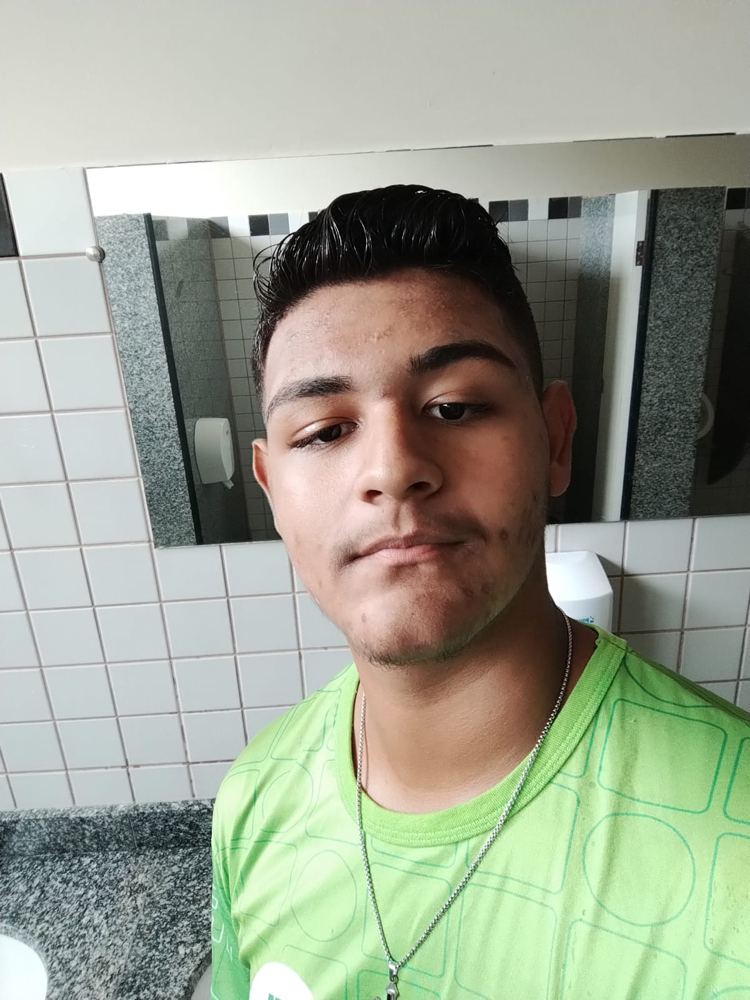

MUITO PRAZER SOU JOÃO VÍTOR SILVA.
Sou um aluno do IFRO Campus-Vilhena.Cursando o ensino médio intregrado ao curso técnico em informática
Por enquanto o unico foco/desejo é atingir a média ksks
Sou um aluno do IFRO Campus-Vilhena.Cursando o ensino médio intregrado ao curso técnico em informática
Por enquanto o unico foco/desejo é atingir a média ksks